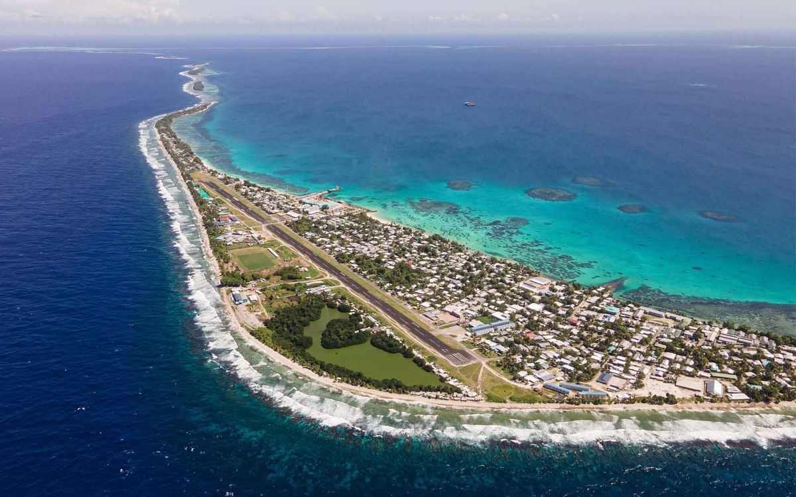

Talofa from Tuvalu....
Tuvalu is a small island nation in the Pacific Ocean, but its story is anything but small. Made up of nine low-lying islands, it is one of the least populated and most remote countries in the world. Life in Tuvalu is deeply connected to the ocean—people rely on fishing, farming, and strong community ties to sustain daily life.

What makes Tuvalu special is its culture. Traditions are passed down through generations, especially through dance, music, and storytelling. Community gatherings, celebrations, and cultural nights are a big part of life, where people come together to share food, perform, and honor their heritage. Respect for elders and strong family values are at the heart of Tuvaluan society.
At the same time, Tuvalu faces serious challenges. Rising sea levels threaten the land, homes, and future of the islands. Despite this, the people of Tuvalu continue to show resilience and pride. They are determined to preserve their culture and identity, no matter what the future holds.
Tuvalu may be small on the map, but it carries a powerful spirit—one of unity, strength, and deep connection to both land and sea.